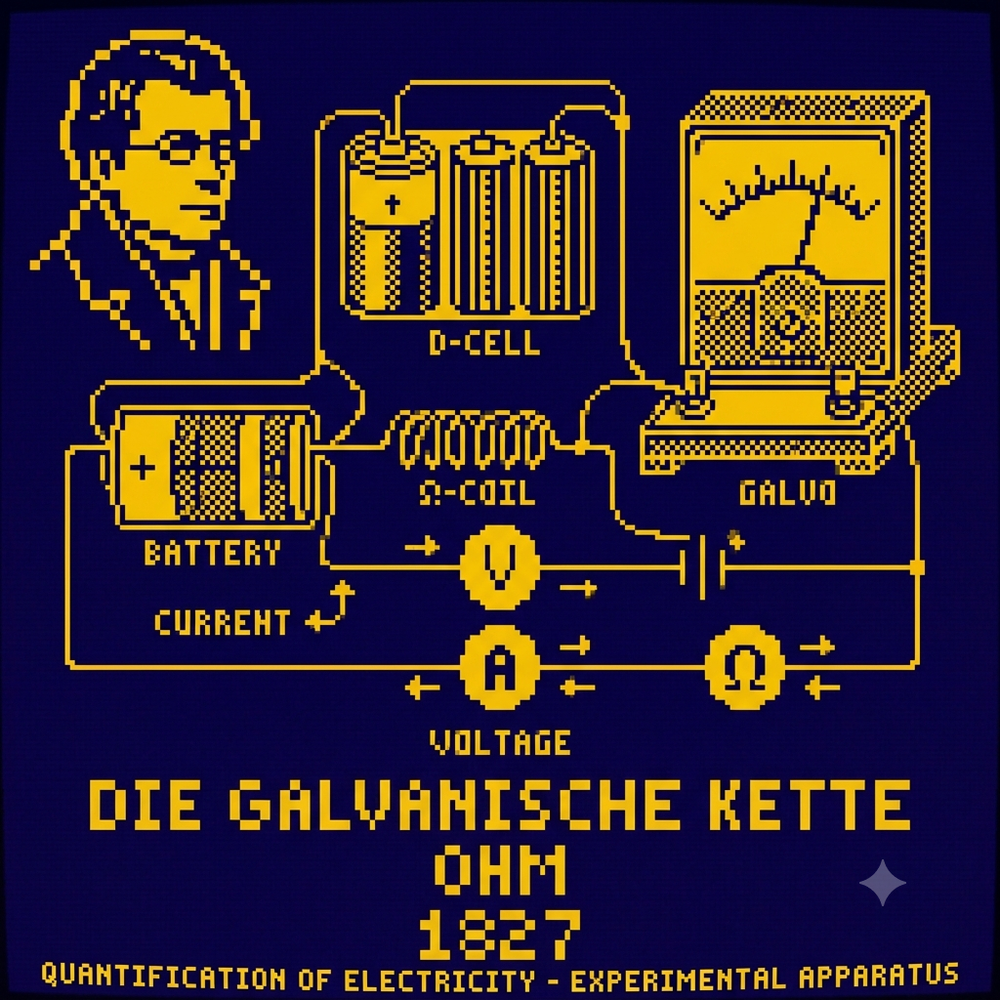

Leis de Ohm
por Luciana
Provou experimentalmente que a corrente elétrica (i) em um condutor é diretamente proporcional à tensão (U) e inversamente proporcional à resistência (R), expressa pela fórmula U = R.i

circuito galvânico, ou Die Galvanische Kette. O sistema é alimentado por fontes de energia química, identificadas como baterias (BATTERY e um banco de D-CELL), que fornecem a tensão elétrica necessária. A corrente elétrica flui através de uma bobina de resistência variável (Ω-COIL), com sua intensidade sendo medida por um galvanômetro (GALVO). Setas de corrente e símbolos esquemáticos para volts (V), amperes (A) e ohm (Ω) estão integrados ao diagrama, ilustrando graficamente a relação fundamental e quantitativa que Ohm estabeleceu entre essas três grandezas elétricas essenciais em sua descoberta histórica.">Publicação do Circuito Galvânico
por Luciana
Em 1827, lançou o livro Die galvanische Kette, mathematisch bearbeitet (O Circuito Galvânico Investigado Matematicamente), aplicando conceitos matemáticos rigorosos ao estudo da eletricidade.
![Retrata um professor de física barbudo, de terno marrom, dando uma palestra sobre eletricidade para um público sentado. Ele está atrás de uma mesa de madeira equipada com uma luminária de mesa articulada acesa, pilhas de papéis e um copo d'água, apontando com giz para um quadro negro repleto de fórmulas e diagramas. O quadro exibe com destaque a Lei de Ohm (U = I * R), relações de unidade (como R = Ω) e um esquema de circuito simples, indicando o tema de circuitos elétricos e engenharia. No primeiro plano, as cabeças silhuetadas de vários estudantes são visíveis, olhando para a apresentação, enquanto o fundo mostra uma parede de tijolos, uma lâmpada pendurada e uma janela com várias vidraças.](matematizando.png)
Quantificação da Eletricidade
por Luciana
Seu trabalho transformou o estudo dos fenômenos elétricos — antes predominantemente descritivos — em uma ciência exata e mensurável.
Legado e Homenagem
por Luciana
A unidade de medida de resistência elétrica no Sistema Internacional (SI) recebeu o nome de ohm (representada pelo símbolo $\Omega$) em sua homenagem.